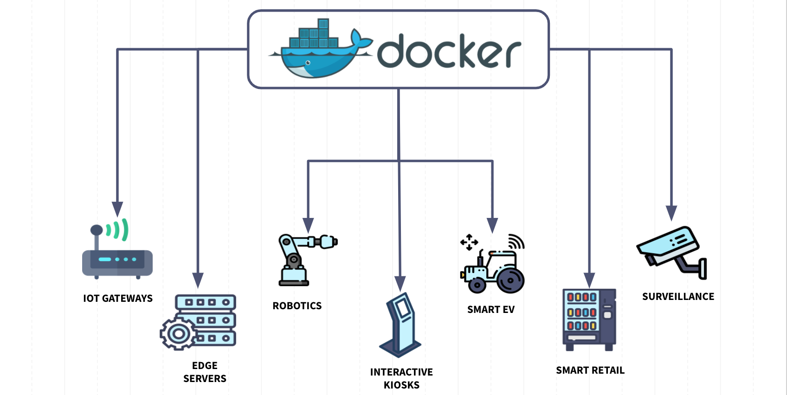

MobileNetV2 PyTorch Docker Deployment Guide

This guide walks you through deploying a pre-trained MobileNetV2 model using PyTorch and Docker, creating a REST API for image classification.
Project Structure
mobilenetv2-pytorch-docker/
├── app/
│ ├── __init__.py
│ ├── main.py
│ ├── model_handler.py
│ └── utils.py
├── requirements.txt
├── Dockerfile
├── docker-compose.yml
├── .dockerignore
└── README.md1. Application Code
app/main.py - FastAPI Application
from fastapi import FastAPI, File, UploadFile, HTTPException
from fastapi.responses import JSONResponse
import uvicorn
import io
from PIL import Image
import numpy as np
from .model_handler import MobileNetV2Handler
from .utils import preprocess_image, decode_predictions
import logging
# Configure logging
logging.basicConfig(level=logging.INFO)
logger = logging.getLogger(__name__)
app = FastAPI(
title="MobileNetV2 PyTorch Image Classification API",
description="Deploy MobileNetV2 using PyTorch for image classification",
version="1.0.0"
)
# Initialize model handler
model_handler = MobileNetV2Handler()
@app.on_event("startup")
async def startup_event():
"""Load model on startup"""
try:
model_handler.load_model()
logger.info("Model loaded successfully")
except Exception as e:
logger.error(f"Failed to load model: {e}")
raise
@app.get("/")
async def root():
return {"message": "MobileNetV2 PyTorch Classification API", "status": "running"}
@app.get("/health")
async def health_check():
return {"status": "healthy", "model_loaded": model_handler.is_loaded()}
@app.post("/predict")
async def predict(file: UploadFile = File(...)):
"""
Predict image class using MobileNetV2
"""
if not file.content_type.startswith("image/"):
raise HTTPException(status_code=400, detail="File must be an image")
try:
# Read and preprocess image
image_data = await file.read()
image = Image.open(io.BytesIO(image_data))
if image.mode != 'RGB':
image = image.convert('RGB')
# Preprocess for MobileNetV2
processed_image = preprocess_image(image)
# Make prediction
predictions = model_handler.predict(processed_image)
# Decode predictions
decoded_predictions = decode_predictions(predictions, top=5)
return JSONResponse(content={
"predictions": decoded_predictions,
"success": True
})
except Exception as e:
logger.error(f"Prediction error: {e}")
raise HTTPException(status_code=500, detail=f"Prediction failed: {str(e)}")
@app.post("/batch_predict")
async def batch_predict(files: list[UploadFile] = File(...)):
"""
Batch prediction for multiple images
"""
if len(files) > 10: # Limit batch size
raise HTTPException(status_code=400, detail="Maximum 10 images allowed per batch")
results = []
for file in files:
if not file.content_type.startswith("image/"):
results.append({
"filename": file.filename,
"error": "File must be an image"
})
continue
try:
image_data = await file.read()
image = Image.open(io.BytesIO(image_data))
if image.mode != 'RGB':
image = image.convert('RGB')
processed_image = preprocess_image(image)
predictions = model_handler.predict(processed_image)
decoded_predictions = decode_predictions(predictions, top=3)
results.append({
"filename": file.filename,
"predictions": decoded_predictions,
"success": True
})
except Exception as e:
results.append({
"filename": file.filename,
"error": str(e),
"success": False
})
return JSONResponse(content={"results": results})
@app.get("/model_info")
async def model_info():
"""Get model information"""
return {
"model_name": "MobileNetV2",
"framework": "PyTorch",
"input_size": [224, 224],
"num_classes": 1000,
"pretrained": True
}
if __name__ == "__main__":
uvicorn.run(app, host="0.0.0.0", port=8000)app/model_handler.py - PyTorch Model Management
import torch
import torch.nn as nn
from torchvision import models
import numpy as np
import logging
logger = logging.getLogger(__name__)
class MobileNetV2Handler:
def __init__(self):
self.model = None
self.device = None
self._loaded = False
def load_model(self):
"""Load pre-trained MobileNetV2 model"""
try:
logger.info("Loading MobileNetV2 PyTorch model...")
# Determine device (CPU/GPU)
self.device = torch.device('cuda' if torch.cuda.is_available() else 'cpu')
logger.info(f"Using device: {self.device}")
# Load pre-trained MobileNetV2
self.model = models.mobilenet_v2(pretrained=True)
self.model.eval() # Set to evaluation mode
self.model.to(self.device)
# Warm up the model with a dummy prediction
dummy_input = torch.randn(1, 3, 224, 224).to(self.device)
with torch.no_grad():
_ = self.model(dummy_input)
self._loaded = True
logger.info("Model loaded and warmed up successfully")
except Exception as e:
logger.error(f"Failed to load model: {e}")
raise
def predict(self, image_tensor):
"""Make prediction on preprocessed image tensor"""
if not self._loaded:
raise RuntimeError("Model not loaded")
try:
# Ensure tensor is on correct device
if isinstance(image_tensor, np.ndarray):
image_tensor = torch.from_numpy(image_tensor)
image_tensor = image_tensor.to(self.device)
# Ensure batch dimension
if len(image_tensor.shape) == 3:
image_tensor = image_tensor.unsqueeze(0)
# Make prediction
with torch.no_grad():
outputs = self.model(image_tensor)
# Apply softmax to get probabilities
probabilities = torch.nn.functional.softmax(outputs, dim=1)
return probabilities.cpu().numpy()
except Exception as e:
logger.error(f"Prediction failed: {e}")
raise
def predict_batch(self, image_tensors):
"""Make batch predictions"""
if not self._loaded:
raise RuntimeError("Model not loaded")
try:
# Convert to tensor if numpy array
if isinstance(image_tensors, np.ndarray):
image_tensors = torch.from_numpy(image_tensors)
image_tensors = image_tensors.to(self.device)
# Make batch prediction
with torch.no_grad():
outputs = self.model(image_tensors)
probabilities = torch.nn.functional.softmax(outputs, dim=1)
return probabilities.cpu().numpy()
except Exception as e:
logger.error(f"Batch prediction failed: {e}")
raise
def is_loaded(self):
"""Check if model is loaded"""
return self._loaded
def get_device(self):
"""Get current device"""
return str(self.device) if self.device else "not initialized"app/utils.py - Utility Functions
import numpy as np
import torch
from PIL import Image
from torchvision import transforms
import json
import os
import requests
import logging
logger = logging.getLogger(__name__)
# ImageNet class labels
IMAGENET_CLASSES_URL = "https://raw.githubusercontent.com/pytorch/hub/master/imagenet_classes.txt"
def get_imagenet_classes():
"""Download and cache ImageNet class labels"""
try:
if os.path.exists("imagenet_classes.txt"):
with open("imagenet_classes.txt", "r") as f:
classes = [line.strip() for line in f.readlines()]
else:
logger.info("Downloading ImageNet class labels...")
response = requests.get(IMAGENET_CLASSES_URL)
classes = response.text.strip().split('\n')
# Cache the classes
with open("imagenet_classes.txt", "w") as f:
for class_name in classes:
f.write(f"{class_name}\n")
return classes
except Exception as e:
logger.warning(f"Could not load ImageNet classes: {e}")
return [f"class_{i}" for i in range(1000)]
# Load ImageNet classes
IMAGENET_CLASSES = get_imagenet_classes()
def preprocess_image(image: Image.Image, target_size=(224, 224)):
"""
Preprocess image for MobileNetV2 PyTorch model
"""
try:
# Define transforms
transform = transforms.Compose([
transforms.Resize(256),
transforms.CenterCrop(target_size),
transforms.ToTensor(),
transforms.Normalize(
mean=[0.485, 0.456, 0.406], # ImageNet normalization
std=[0.229, 0.224, 0.225]
)
])
# Apply transforms
image_tensor = transform(image)
return image_tensor
except Exception as e:
raise ValueError(f"Image preprocessing failed: {e}")
def preprocess_batch(images: list, target_size=(224, 224)):
"""
Preprocess batch of images
"""
try:
transform = transforms.Compose([
transforms.Resize(256),
transforms.CenterCrop(target_size),
transforms.ToTensor(),
transforms.Normalize(
mean=[0.485, 0.456, 0.406],
std=[0.229, 0.224, 0.225]
)
])
batch_tensors = []
for image in images:
if isinstance(image, str): # If path
image = Image.open(image).convert('RGB')
elif not isinstance(image, Image.Image):
raise ValueError("Invalid image type")
tensor = transform(image)
batch_tensors.append(tensor)
return torch.stack(batch_tensors)
except Exception as e:
raise ValueError(f"Batch preprocessing failed: {e}")
def decode_predictions(predictions, top=5):
"""
Decode model predictions to human-readable labels
"""
try:
# Get top predictions
if isinstance(predictions, torch.Tensor):
predictions = predictions.numpy()
# Handle batch predictions (take first sample)
if len(predictions.shape) > 1:
predictions = predictions[0]
# Get top k indices
top_indices = np.argsort(predictions)[-top:][::-1]
# Format results
results = []
for idx in top_indices:
confidence = float(predictions[idx])
class_name = IMAGENET_CLASSES[idx] if idx < len(IMAGENET_CLASSES) else f"class_{idx}"
results.append({
"class_id": int(idx),
"class_name": class_name,
"confidence": confidence
})
return results
except Exception as e:
raise ValueError(f"Prediction decoding failed: {e}")
def validate_image(image_data):
"""
Validate image data
"""
try:
image = Image.open(image_data)
return image.format in ['JPEG', 'PNG', 'BMP', 'TIFF', 'WEBP']
except:
return False
def tensor_to_numpy(tensor):
"""Convert PyTorch tensor to numpy array"""
if isinstance(tensor, torch.Tensor):
return tensor.detach().cpu().numpy()
return tensor
def numpy_to_tensor(array, device='cpu'):
"""Convert numpy array to PyTorch tensor"""
if isinstance(array, np.ndarray):
return torch.from_numpy(array).to(device)
return array
class ModelProfiler:
"""Simple profiler for model performance"""
def __init__(self):
self.inference_times = []
self.preprocessing_times = []
def record_inference_time(self, time_ms):
self.inference_times.append(time_ms)
def record_preprocessing_time(self, time_ms):
self.preprocessing_times.append(time_ms)
def get_stats(self):
if not self.inference_times:
return {"message": "No inference data recorded"}
return {
"avg_inference_time_ms": np.mean(self.inference_times),
"avg_preprocessing_time_ms": np.mean(self.preprocessing_times) if self.preprocessing_times else 0,
"total_inferences": len(self.inference_times),
"min_inference_time_ms": np.min(self.inference_times),
"max_inference_time_ms": np.max(self.inference_times)
}
# Global profiler instance
profiler = ModelProfiler()app/__init__.py
# Empty file to make app a Python package2. Configuration Files
requirements.txt
fastapi==0.104.1
uvicorn[standard]==0.24.0
torch==2.1.0
torchvision==0.16.0
Pillow==10.1.0
python-multipart==0.0.6
numpy==1.24.3
requests==2.31.0Dockerfile
# Use official Python runtime as base image
FROM python:3.11-slim
# Set working directory
WORKDIR /app
# Install system dependencies
RUN apt-get update && apt-get install -y \
libgl1-mesa-glx \
libglib2.0-0 \
libsm6 \
libxext6 \
libxrender-dev \
libgomp1 \
wget \
curl \
&& rm -rf /var/lib/apt/lists/*
# Copy requirements first for better caching
COPY requirements.txt .
# Install PyTorch CPU version (smaller image)
RUN pip install --no-cache-dir --upgrade pip && \
pip install torch torchvision --index-url https://download.pytorch.org/whl/cpu && \
pip install --no-cache-dir -r requirements.txt
# Copy application code
COPY app/ ./app/
# Create non-root user for security
RUN useradd --create-home --shell /bin/bash app && \
chown -R app:app /app
USER app
# Pre-download ImageNet classes
RUN python -c "from app.utils import get_imagenet_classes; get_imagenet_classes()"
# Expose port
EXPOSE 8000
# Health check
HEALTHCHECK --interval=30s --timeout=30s --start-period=60s --retries=3 \
CMD curl -f http://localhost:8000/health || exit 1
# Command to run the application
CMD ["uvicorn", "app.main:app", "--host", "0.0.0.0", "--port", "8000"]Dockerfile.gpu (For GPU Support)
# Use NVIDIA PyTorch base image
FROM pytorch/pytorch:2.1.0-cuda12.1-cudnn8-runtime
# Set working directory
WORKDIR /app
# Install system dependencies
RUN apt-get update && apt-get install -y \
curl \
wget \
&& rm -rf /var/lib/apt/lists/*
# Copy requirements first for better caching
COPY requirements.txt .
# Install additional dependencies
RUN pip install --no-cache-dir --upgrade pip && \
pip install --no-cache-dir -r requirements.txt
# Copy application code
COPY app/ ./app/
# Create non-root user for security
RUN useradd --create-home --shell /bin/bash app && \
chown -R app:app /app
USER app
# Pre-download ImageNet classes
RUN python -c "from app.utils import get_imagenet_classes; get_imagenet_classes()"
# Expose port
EXPOSE 8000
# Health check
HEALTHCHECK --interval=30s --timeout=30s --start-period=60s --retries=3 \
CMD curl -f http://localhost:8000/health || exit 1
# Command to run the application
CMD ["uvicorn", "app.main:app", "--host", "0.0.0.0", "--port", "8000"]docker-compose.yml
version: '3.8'
services:
mobilenetv2-pytorch-api:
build: .
ports:
- "8000:8000"
environment:
- PYTHONPATH=/app
- TORCH_HOME=/app/.torch
volumes:
- ./logs:/app/logs
- torch_cache:/app/.torch
restart: unless-stopped
healthcheck:
test: ["CMD", "curl", "-f", "http://localhost:8000/health"]
interval: 30s
timeout: 10s
retries: 3
start_period: 60s
deploy:
resources:
limits:
memory: 2G
reservations:
memory: 1G
# GPU version (uncomment and modify as needed)
# mobilenetv2-pytorch-gpu:
# build:
# context: .
# dockerfile: Dockerfile.gpu
# ports:
# - "8000:8000"
# environment:
# - PYTHONPATH=/app
# - TORCH_HOME=/app/.torch
# - NVIDIA_VISIBLE_DEVICES=all
# volumes:
# - ./logs:/app/logs
# - torch_cache:/app/.torch
# restart: unless-stopped
# deploy:
# resources:
# reservations:
# devices:
# - driver: nvidia
# count: 1
# capabilities: [gpu]
# Optional: Add nginx for production
nginx:
image: nginx:alpine
ports:
- "80:80"
volumes:
- ./nginx.conf:/etc/nginx/nginx.conf:ro
depends_on:
- mobilenetv2-pytorch-api
restart: unless-stopped
volumes:
torch_cache:.dockerignore
__pycache__
*.pyc
*.pyo
*.pyd
.Python
env/
pip-log.txt
pip-delete-this-directory.txt
.git
.gitignore
README.md
.pytest_cache
.coverage
.nyc_output
node_modules
.DS_Store
*.log
logs/
*.pth
*.pt
.torch/nginx.conf (Optional - for production)
events {
worker_connections 1024;
}
http {
upstream api {
server mobilenetv2-pytorch-api:8000;
}
server {
listen 80;
client_max_body_size 10M;
location / {
proxy_pass http://api;
proxy_set_header Host $host;
proxy_set_header X-Real-IP $remote_addr;
proxy_set_header X-Forwarded-For $proxy_add_x_forwarded_for;
proxy_set_header X-Forwarded-Proto $scheme;
proxy_read_timeout 300;
proxy_connect_timeout 300;
proxy_send_timeout 300;
}
}
}3. Deployment Commands
Build and Run with Docker
# Build the CPU image
docker build -t mobilenetv2-pytorch-api .
# Build the GPU image (if you have NVIDIA GPU)
docker build -f Dockerfile.gpu -t mobilenetv2-pytorch-gpu .
# Run CPU version
docker run -p 8000:8000 mobilenetv2-pytorch-api
# Run GPU version
docker run --gpus all -p 8000:8000 mobilenetv2-pytorch-gpu
# Run with environment variables
docker run -p 8000:8000 -e TORCH_HOME=/tmp/.torch mobilenetv2-pytorch-apiUsing Docker Compose
# Build and start services
docker-compose up --build
# Run in background
docker-compose up -d
# View logs
docker-compose logs -f mobilenetv2-pytorch-api
# Stop services
docker-compose down4. Usage Examples
Test the API
# Health check
curl http://localhost:8000/health
# Model info
curl http://localhost:8000/model_info
# Single image prediction
curl -X POST "http://localhost:8000/predict" \
-H "accept: application/json" \
-H "Content-Type: multipart/form-data" \
-F "file=@path/to/your/image.jpg"
# Batch prediction
curl -X POST "http://localhost:8000/batch_predict" \
-H "accept: application/json" \
-H "Content-Type: multipart/form-data" \
-F "files=@image1.jpg" \
-F "files=@image2.jpg"Python Client Example
import requests
import json
# Single prediction
def predict_image(image_path, api_url="http://localhost:8000"):
url = f"{api_url}/predict"
files = {"file": open(image_path, "rb")}
response = requests.post(url, files=files)
return response.json()
# Batch prediction
def predict_batch(image_paths, api_url="http://localhost:8000"):
url = f"{api_url}/batch_predict"
files = [("files", open(path, "rb")) for path in image_paths]
response = requests.post(url, files=files)
return response.json()
# Usage
result = predict_image("cat.jpg")
print(json.dumps(result, indent=2))
batch_result = predict_batch(["cat.jpg", "dog.jpg"])
print(json.dumps(batch_result, indent=2))Response Format
{
"predictions": [
{
"class_id": 281,
"class_name": "tabby",
"confidence": 0.8234567
},
{
"class_id": 282,
"class_name": "tiger_cat",
"confidence": 0.1234567
}
],
"success": true
}5. Performance Optimization
Model Optimization
# Add to model_handler.py for optimization
import torch.jit
class OptimizedMobileNetV2Handler(MobileNetV2Handler):
def __init__(self, use_jit=True, use_half_precision=False):
super().__init__()
self.use_jit = use_jit
self.use_half_precision = use_half_precision
def load_model(self):
super().load_model()
if self.use_jit:
# TorchScript compilation for faster inference
self.model = torch.jit.script(self.model)
logger.info("Model compiled with TorchScript")
if self.use_half_precision and self.device.type == 'cuda':
# Half precision for GPU
self.model = self.model.half()
logger.info("Model converted to half precision")Docker Optimization
# Multi-stage build for smaller image
FROM python:3.11-slim as builder
WORKDIR /app
COPY requirements.txt .
RUN pip install --user --no-cache-dir -r requirements.txt
FROM python:3.11-slim
WORKDIR /app
COPY --from=builder /root/.local /root/.local
COPY app/ ./app/
# Make sure scripts in .local are usable
ENV PATH=/root/.local/bin:$PATH
EXPOSE 8000
CMD ["uvicorn", "app.main:app", "--host", "0.0.0.0", "--port", "8000"]6. Monitoring and Logging
Enhanced Logging
# Add to main.py
import time
from app.utils import profiler
@app.middleware("http")
async def log_requests(request, call_next):
start_time = time.time()
response = await call_next(request)
process_time = (time.time() - start_time) * 1000
logger.info(f"{request.method} {request.url.path} - {process_time:.2f}ms")
if request.url.path == "/predict":
profiler.record_inference_time(process_time)
return response
@app.get("/stats")
async def get_stats():
"""Get performance statistics"""
return profiler.get_stats()7. Cloud Deployment
AWS ECS Task Definition
{
"family": "mobilenetv2-pytorch-task",
"networkMode": "awsvpc",
"requiresCompatibilities": ["FARGATE"],
"cpu": "1024",
"memory": "2048",
"containerDefinitions": [
{
"name": "mobilenetv2-pytorch-api",
"image": "your-registry/mobilenetv2-pytorch-api:latest",
"portMappings": [
{
"containerPort": 8000,
"protocol": "tcp"
}
],
"environment": [
{
"name": "TORCH_HOME",
"value": "/tmp/.torch"
}
],
"essential": true,
"logConfiguration": {
"logDriver": "awslogs",
"options": {
"awslogs-group": "/ecs/mobilenetv2-pytorch",
"awslogs-region": "us-east-1",
"awslogs-stream-prefix": "ecs"
}
}
}
]
}Kubernetes Deployment
apiVersion: apps/v1
kind: Deployment
metadata:
name: mobilenetv2-pytorch-api
spec:
replicas: 3
selector:
matchLabels:
app: mobilenetv2-pytorch-api
template:
metadata:
labels:
app: mobilenetv2-pytorch-api
spec:
containers:
- name: mobilenetv2-pytorch-api
image: mobilenetv2-pytorch-api:latest
ports:
- containerPort: 8000
env:
- name: TORCH_HOME
value: /tmp/.torch
resources:
requests:
memory: "1Gi"
cpu: "500m"
limits:
memory: "2Gi"
cpu: "1000m"
volumeMounts:
- name: torch-cache
mountPath: /tmp/.torch
volumes:
- name: torch-cache
emptyDir: {}
---
apiVersion: v1
kind: Service
metadata:
name: mobilenetv2-pytorch-service
spec:
selector:
app: mobilenetv2-pytorch-api
ports:
- protocol: TCP
port: 80
targetPort: 8000
type: LoadBalancerThis PyTorch-based guide provides the same functionality as the TensorFlow version but uses PyTorch’s ecosystem, including torchvision for pre-trained models, PyTorch transformations for preprocessing, and proper tensor handling throughout the application.